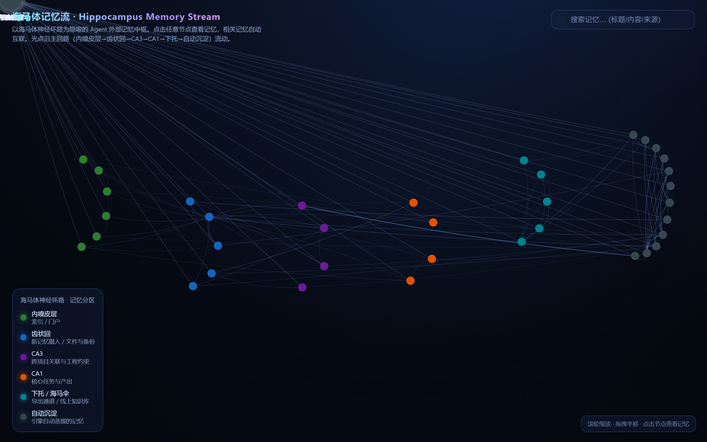

海马体记忆流 · Hippocampus Memory Stream
Live Demo以海马体神经环路为隐喻的 Agent 外部记忆中枢。点击任意节点查看记忆，相关记忆自动互联；光点沿「内嗅皮层 → 齿状回 → CA3 → CA1 → 下托 → 自动沉淀」主回路流动。
🔴 在线演示
🧠 已连接 42 个记忆节点
🖱 滚轮缩放 · 拖拽平移 · 点击节点
实时交互画面

上图：线上 demo 实际运行画面，节点沿海马体神经环路分布，相关记忆自动连线。
记忆分区 · 6 大脑区映射
●
内嗅皮层
索引 / 门户
所有外部输入与内部检索的入口，决定新信息进入海马体的路径。●
齿状回
新记忆摄入 / 文件与备份
负责新记忆的初步编码与模式分离，对应 Agent 对新文件、新对话、新数据的摄取。●
CA3
跨项目关联与工程约束
自动联想与模式补全，把一个项目里的经验迁移到另一个项目，并保留约束条件。●
CA1
核心任务与产出
当前最重要的任务上下文与已生成的关键产出，形成工作记忆的焦点。●
下托 / 海马伞
导出通道 / 线上知识库
把临时工作记忆导出为长期知识资产，沉淀到笔记、文档或线上知识库。●
自动沉淀
引擎自动蒸馏的记忆
无需手动整理，引擎根据访问频率与关联强度自动蒸馏并归档长期记忆。神经环路流程
整个可视化以海马体三突触回路为物理隐喻：信息从内嗅皮层进入，经过齿状回做稀疏编码，在CA3与已有记忆发生联想，CA1完成最终整合，最后经下托 / 海马伞输出到皮层进行长期存储，同时在底层持续自动沉淀。光点的流动不是装饰，而是当前被激活记忆在环路上的真实位置。
交互方式
🔍
滚轮缩放
放大查看单节点细节，缩小纵观整体记忆拓扑。✋
拖拽平移
在大型记忆网络中自由移动视角。👆